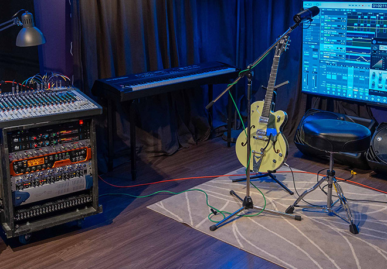

Audio Processing

Night Sparrow Productions has been entrusted with creative projects by many of North
America’s
premier agencies and others around the world. By leveraging our four studios and our network
of
talent across Canada, we are able to fulfill the vision and production challenges that
creative
leaders need to serve their clients.
Whether we work alongside our agency partners or independently, we build our team
accordingly to
best deliver excellence, value, and exceptional service.